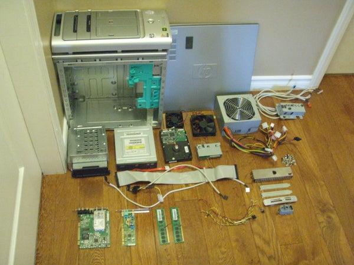

The power to generate shadows and darkness. Sub-power of Darkness Manipulation. Variation of Elemental
Generation. Opposite to Light Generation.
He can generate and project shadows and darkness which absorb or nullifies light in the area.
Shadow Generation is the horrorfying to scare people off of feared.
Using it like Pride use them in the shadows by infected the light of senses.
Mostly using the other way by Barragan from Bleach use Breathe of death.
Very deadliest in Real Life. For instance; into evil souls manipulation of multiple from Sebastian Shaw in X-Men
First Class which is the clone type of vibration like Blackheart from Ghost Rider calling himself LEGION.
If I dismantled any electronic or mechanical goods, I can assemble them with ease.
